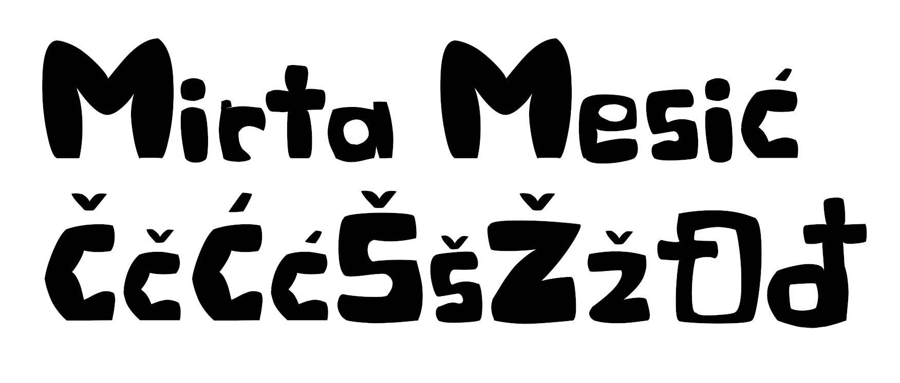
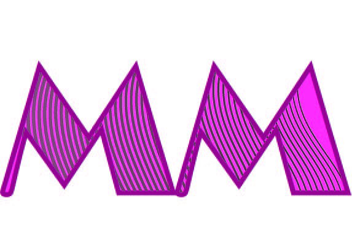
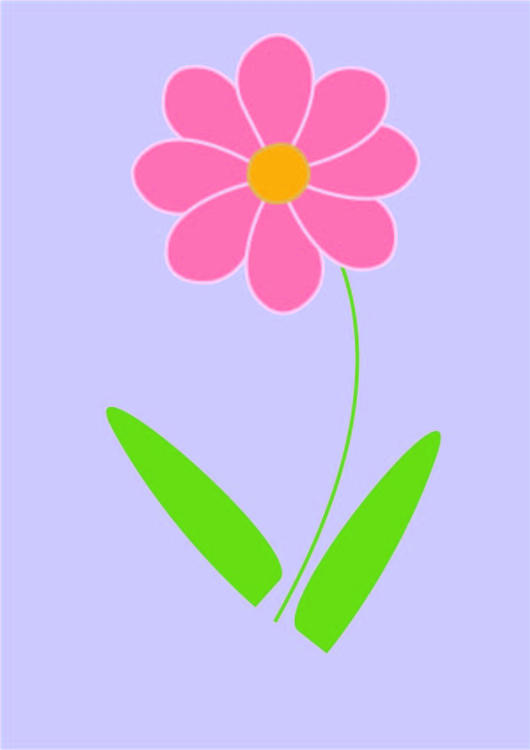
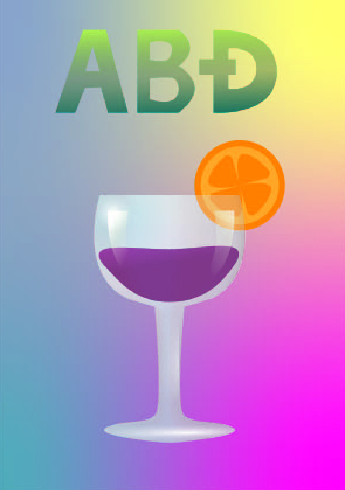
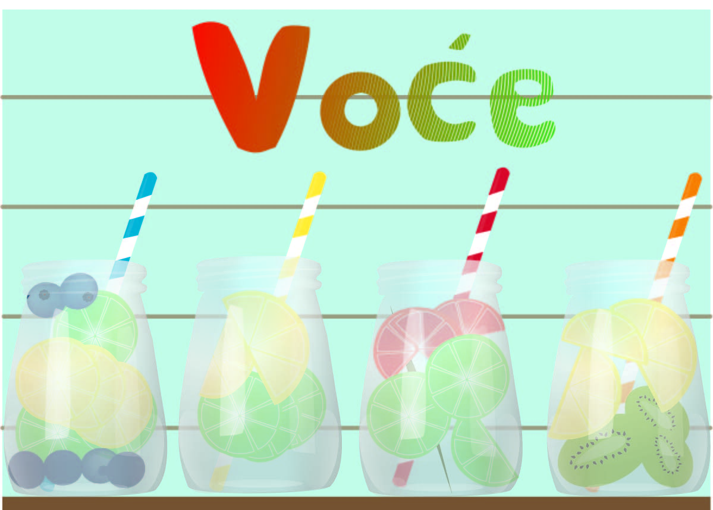
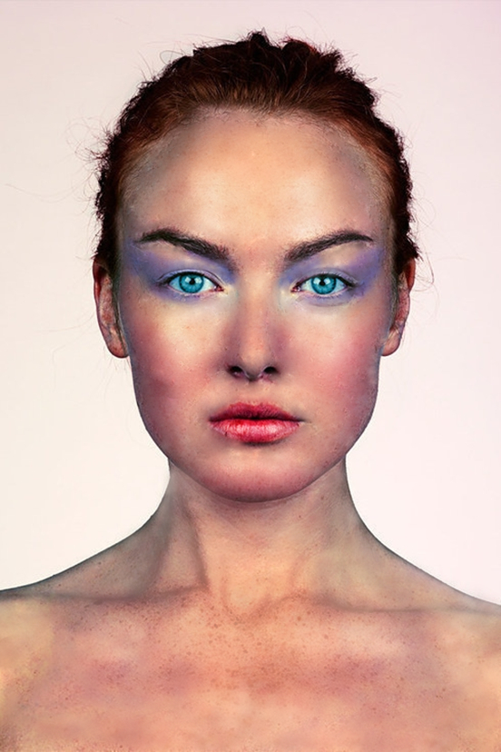
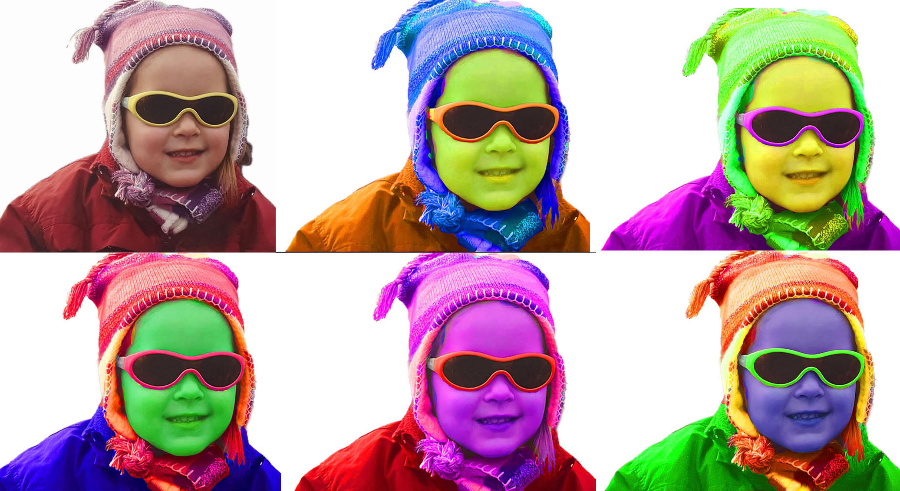
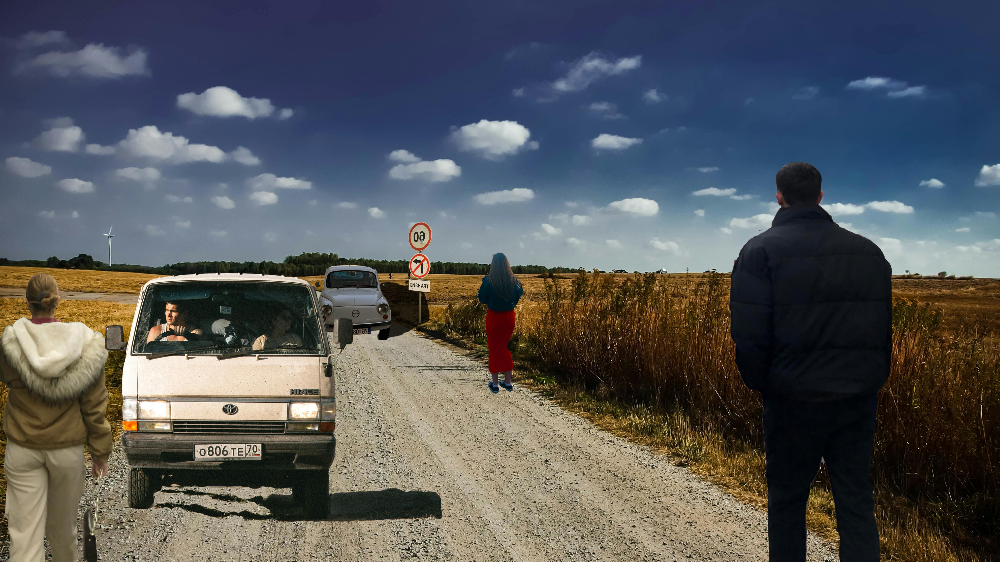
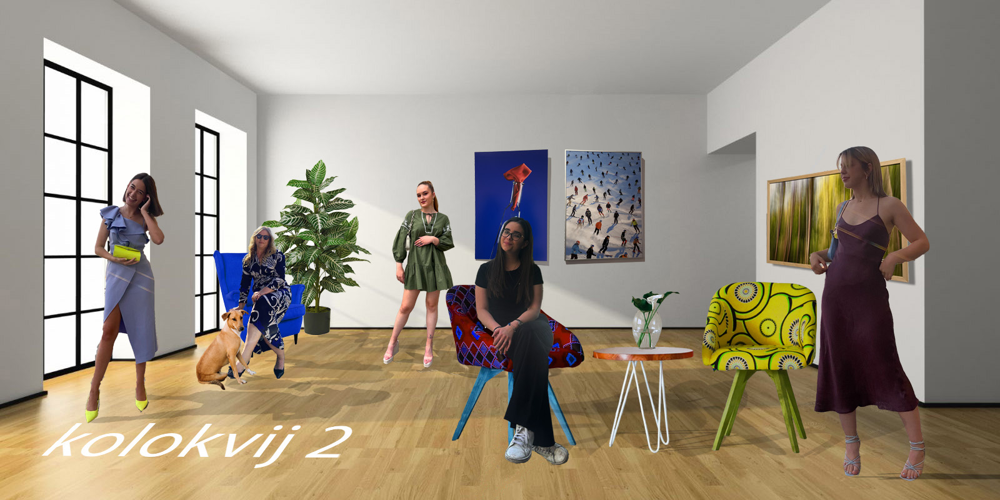

MOJE VJEŽBE
1. vježba - font

2. vježba - Bezierova krivulja, precizno crtanje

3. vježba - boja, transformacije

4. vježba - gradijenti, transparencija

projektni zadatak - vektorska grafika

5. vježba - retuširanje

6. vježba - koloriranje

7. vježba - fotomontaža

projektni zadatak - piksel grafika

8. vježba - cinemagraf